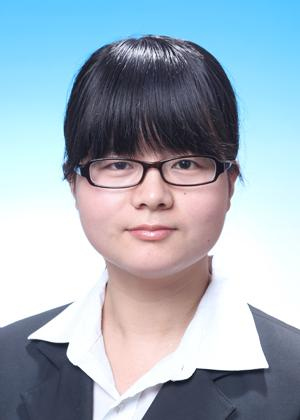

Feng Yang (杨烽)
|  |
副教授，博士生/硕士生导师
重庆邮电大学文峰青年百人 | 华为云与计算先锋教师
重庆邮电大学通信与信息工程学院
智能多媒体处理创新团队（负责人：高陈强教授）
|
个人简介
杨烽，工学博士，副教授，博士生/硕士生导师，重庆邮电大学文峰青年百人，华为云与计算先锋教师。分别于2013年、2018年在武汉大学获得遥感专业工学学士、工学博士学位，师从张良培教授、夏桂松教授与黄昕教授。现为重庆邮电大学通信与信息工程学院教师，重邮智能多媒体处理创新团队成员。
主要从事图像/视频处理、遥感影像分析与人工智能领域的研究。主持国家自然科学基金面上项目和青年项目、国家重点研发计划项目子课题、中国博士后面上基金、重庆市自然科学基金面上项目、重庆市教委科学技术研究项目、重庆市博士后特别资助项目、企业委托等科研项目。在IEEE Transactions on Image Processing、IEEE Transactions on Geoscience and Remote Sensing、Neurocomputing和ACM MM、IEEE ICPR等国际权威期刊和国际会议上发表论文20余篇，获得授权发明专利3项。指导的研究生在华为、字节跳动、vivo、深信服、湖南联通等知名企业就业。
研究方向
- 遥感图像目标检测、语义分割、变化检测
- 无人机航拍视频目标识别、事件检测
- 计算机视觉、深度学习、机器学习
招生信息
招生类型与名额
- 学术型硕士：信息与通信工程（每年2-3名）
- 专业型硕士：新一代电子信息技术/电子与通信工程（每年4-5名）
招生要求
- 对图像处理、人工智能领域有浓厚兴趣，具备Python/Java编程基础
- 本科专业背景：计算机科学与技术、电子信息、遥感科学与技术等相关专业
- 英语水平：通过CET-4（优先考虑CET-6≥425）
- 不论背景，要求认真努力、踏实肯干、积极上进！
科研项目（近五年主持）
- 国家自然科学基金（面上项目），面向多级语义感知的无人机遥感视频事件识别方法研究，2024.01-2027.12，主持
- 国家自然科学基金（青年基金），基于散射网络和双线性深度模型的动态纹理表达研究，2020.01-2022.12，主持
- 国家重点研发计划子课题，基于多源多模态知识驱动的元学习关键技术，2022.11-2027.10，主持
- 中国博士后科学基金，卫星遥感视频处理中的动态纹理特征表示机理研究，2022.01-2023.12，主持
- 重庆市自然科学基金（面上项目），面向卫星遥感视频运动目标检测的动态纹理分析研究，2020.07-2023.06，主持
- 重庆市教委科学技术研究项目（青年项目），基于多元形状树的动态纹理建模及卫星视频处理应用研究, 2019.10-2022.10，主持
- 重庆市博士后研究项目特别资助，基于动态纹理特征表示的卫星遥感视频处理方法研究，2022.06-2023.12，主持
- 重庆市地理信息和遥感应用中心开放课题，无人机影像数据空间分辨率计算与评估软件研发，2019.07-2020.06，主持
- 企业横向课题，教室学生异常状态分析软件运行库，2019.03-2021.03，主持
代表性论文
- Feng Yang, Mengtao Li, Wenqiang Shu, Anyong Qin, Tiecheng Song, Chenqiang Gao, Gui-Song Xia, "ConvFormer-CD: Hybrid CNN-Transformer with Temporal Attention for Detecting Changes in Remote Sensing Imagery," IEEE Transactions on Geoscience and Remote Sensing, vol. 63, 1-15, 2025.
- Feng Yang, Yifeng Yuan, Anyong Qin, Yue Zhao, Tiecheng Song, Chenqiang Gao, "Change-Aware Cascaded Dual-Decoder Network for Remote Sensing Image Change Detection," IEEE Transactions on Geoscience and Remote Sensing, vol. 62, pp. 1-12, 2024.
- Feng Yang, Gui-Song Xia, Dengxin Dai, Liangpei Zhang, "Learning the Synthesizability of Dynamic Texture Samples," IEEE Transactions on Image Processing, vol. 28, no. 5, pp. 2502-2517, May 2019.
- Feng Yang, Xiangyue Yuan, Jie Ran, Wenqiang Shu, Yue Zhao, Anyong Qin, Chenqiang Gao, "Accurate Instance Segmentation for Remote Sensing Images via Adaptive and Dynamic Feature Learning," Remote Sensing, vol. 13, no. 23, pp. 4774, 2021.
- Feng Yang, Gui-Song Xia, Gang Liu, Liangpei Zhang, Xin Huang, "Dynamic texture recognition by aggregating spatial and temporal features via ensemble svms," Neurocomputing, vol. 173, pp. 1310–1321, 2016.
- Feng Yang, Gui-Song Xia, Dengxin Dai, Liangpei Zhang, "Delving into the Synthesizability of Dynamic Texture Samples," in IEEE International Conference on Pattern Recognition (ICPR), pp. 2953-2958, 2018.
- Feng Yang, Gui-Song Xia, Liangpei Zhang, Xin Huang, "Stationary dynamic texture synthesis using convolutional neural networks," in IEEE International Conference on Signal Processing (ICSP), pp. 1135-1139, 2016.
- Feng Yang, Jian Zhang, Yue Zhao, Anyong Qin, Chenqiang Gao, "Multiscale Spatio-Temporal Network for Aerial Video Event Recognition," in IEEE International Geoscience and Remote Sensing Symposium (IGARSS), pp. 7835-7838, 2022.
- Xu Chen, Chenqiang Gao, Feng Yang, Xiaohan Wang, Yi Yang, Yahong Han, "Video-to-Image Casting: A Flatting Method for Video Analysis," in ACM Multimedia (ACM MM), pp. 4958-4966, 2021.
- Jie Ran, Feng Yang, Chenqiang Gao, Yue Zhao, Anyong Qin, "Adaptive Fusion and Mask Refinement Instance Segmentation Network for High Resolution Remote Sensing Images," in IEEE International Geoscience and Remote Sensing Symposium (IGARSS), pp. 2843-2846, 2020.
- Yongqing Sun, Jie Ran, Feng Yang, Chenqiang Gao, Takayuki Kurozumi, Hideaki Kimata, Ziqi Ye, "Oriented Object Detection For Remote Sensing Images Based On Weakly Supervised Learning," in IEEE International Conference on Multimedia & Expo Workshops (ICMEW), pp. 1-6, 2021.
- Fangcen Liu, Chenqiang Gao, Yongqing Sun, Yue Zhao, Feng Yang, Anyong Qin, Deyu Meng, "Infrared and visible cross-modal image retrieval through shared features," IEEE Transactions on Circuits and Systems for Video Technology, vol. 31, no. 11, pp. 4485-4496, Nov. 2021.
- Yue Zhao, Pengcheng Li, Chenqiang Gao, Yang Liu, Qiaoyi Chen, Feng Yang, Deyu Meng, "TSASNet: Tooth segmentation on dental panoramic X-ray images by Two-Stage Attention Segmentation Network," Knowledge-Based Systems, vol. 206, pp. 106338, 2020.
- Pengcheng Li, Yang Liu, Zhiming Cui, Feng Yang, Yue Zhao, Chunfeng Lian, Chenqiang Gao. "Semantic Graph Attention With Explicit Anatomical Association Modeling for Tooth Segmentation From CBCT Images." IEEE Trans. Medical Imaging, vol. 41, no. 11, pp. 3116-3127, Nov. 2022.
- 高陈强, 谢承娟, 杨烽, 赵悦, 李鹏程. 基于多尺度特征校准的图像协调化方法. 电子与信息学报, vol. 44, no. 04, pp. 1495-1502, 2022.
- 黄思翔, 高陈强, 陈旭, 赵悦, 杨烽. 结合低秩分解与多流融合的行为识别方法. 重庆邮电大学学报(自然科学版), vol. 34, no. 04, pp. 629-637, 2022.
- 叶盛, 高陈强, 钱志华, 陈欣悦, 杨烽, 赵悦. 基于自适应感受野的教室人体姿态实时检测. 重庆邮电大学学报(自然科学版), vol.34, no.04, pp:621-628, 2022.
联系方式
邮箱：yangfeng@cqupt.edu.cn
地址：重庆市南岸区崇文路2号 重庆邮电大学通信学院
邮编：400065
办公地点：信科大厦1606室
欢迎发送申请邮件（主题：姓名-专硕/学硕），附个人简历及成绩单。